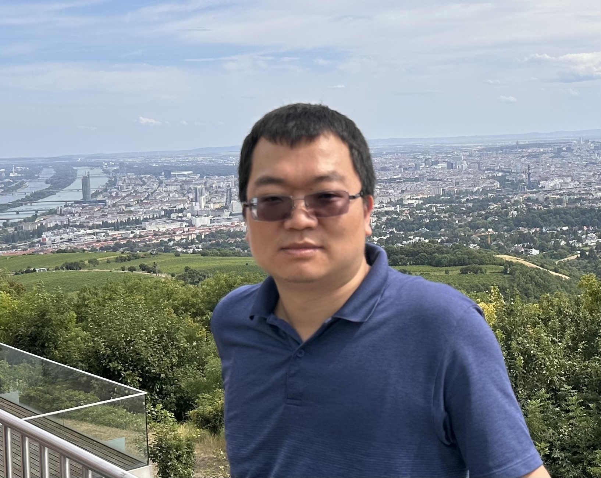

About Dr. Yu Han
Welcome! I am Yu Han. I hold a Ph.D. in Urban and Regional Planning from the University of Florida (UF), along with master's degrees in Electrical and Computer Engineering from UF and Civil and Environmental Engineering from Carnegie Mellon University. I earned my bachelor's degree in Environmental Engineering from the Beijing Institute of Technology, China.
I am currently a research associate at the Department of Land Economy at University of Cambridge. Previously, I served as an Assistant Professor at the Faculty of Geoinformation Science and Earth Observation at the University of Twente. Between 2021 and 2022, I held postdoctoral positions in the Department of Landscape Architecture and Urban Planning at Texas A&M University and the Department of Earth and Environment at Florida International University.
Currently, I am on the job market, seeking roles that align with my expertise in climate adaptation, urban planning, and coastal risk assessment. My research focuses on developing human-centered computational methods to evaluate community risks posed by natural disasters, such as coastal storm surges. I am particularly passionate about employing data-driven models and simulation approaches to analyze human behavior and decision-making in response to climate change.
My recent projects focus on assessing the indirect impacts of compound and cascading hazards in the US and Europe. My work has been published in prestigious journals such as Risk Analysis; the Journal of Environmental Management; Computers, Environment, and Urban Systems; the Journal of Planning Literature; Cities; Climatic Change; and Sustainability and Sustainable Cities and Society, et al.
I teach courses on Climate Change and Adaptation Planning, Geoinformation Science for Digital Planning, Quantitative Risk Assessment, and Land Use and Transportation Modeling to both undergraduate and graduate students.
In my spare time, I enjoy running, family time, and traveling.